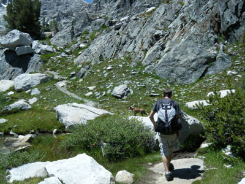

- Tioga Lake Campgrounds
- SandleBag Lake Resort Campgrounds
- Merced Lake Campgrounds
Situated at 9,700 feet above sea level and also upon two lakes. This campground is very beautiful yet it can get very cold at night. Even on sunny 80 degree days, the temperature can drop to 20 degrees and the wind can carry across the lakes. The senery however makes it worth it. Excellent hiking located nearby. A well water pump is located on site and the lakes are great for swimming on a warm summer day. Only 13 sites are available and are first come first served.
Don't let the name fool you! This rustic campsite is far from the usual resort, but it is perfect for the nature lover who likes to completely detatch from civilization. Located at 10,000 feet above sea level and offers the best hiking around. The one modern touch that it does have is a water taxi that will take you across the lake to hike the almost untouched nature resort.
This is one of the original campsites, which was established in 1916, of Yosemite National Park. It's also the most remote as it's only accessible by foot or mule! Hiking, fishing, and swimming are the reasons why backpackers like to stay and recharge for awhile. It's perfect if you want to get away from crowds but still want to stay within the park. The campsite is located at 7,150 feet. With its relatively low elevation, it brings warmer days and nights. Merced Lake Campground is approximately 14 miles to Tuolumne Meadows and Yosemite Valley.